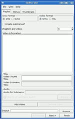
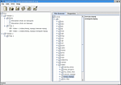

DVD-Authoring
Zum Verständnis dieses Artikels sind folgende Seiten hilfreich:
 DVD-Authoring bezeichnet die Bearbeitungstechnik für Filme oder Videos, mit der diese in das DVD-Video-Format gebracht werden. Im Unterschied zur reinen Videoschnitttechnik umfasst DVD-Authoring auch das Erstellen von einfachen oder komplexen Menüs, das Teilen von Videos in Kapitel bis hin zum Einbinden von Untertiteln und dem Anlegen mehrerer Tonspuren für unterschiedliche Sprachen. Des Weiteren können auch Überblendungen und andere Effekte eingebunden werden.
DVD-Authoring bezeichnet die Bearbeitungstechnik für Filme oder Videos, mit der diese in das DVD-Video-Format gebracht werden. Im Unterschied zur reinen Videoschnitttechnik umfasst DVD-Authoring auch das Erstellen von einfachen oder komplexen Menüs, das Teilen von Videos in Kapitel bis hin zum Einbinden von Untertiteln und dem Anlegen mehrerer Tonspuren für unterschiedliche Sprachen. Des Weiteren können auch Überblendungen und andere Effekte eingebunden werden.
Grafische Programme¶
Bombono¶
Bombono ist ein einfach zu bedienendes und leistungsfähiges Programm, um DVD-Projekte zu erstellen. Funktionen: Aufteilung in Kapitel, Erstellen der Menüstruktur und Brennen auf DVD nebst Transcodieren.
DeVeDe¶
Mit DeVeDe kann man recht einfach DVDs, aber auch (S)VCDs mit mehreren Titeln erstellen. Es nutzt u.a. Mencoder und DVDAuthor. Das Programm kann ab Programmversion 3.0 einfache Menüs erstellen und eignet sich dafür vor allem für Einsteiger.
Der Nachfolger DeVeDe NG kann auch mit MKV, MP4 mit H.264/AAC sowie insbesondere HD-Material umgehen.
DVDStyler¶
DVDStyler ist ein Multi-Plattform DVD-Autorensystem, also eine Software zum Erstellen von DVDs, die außer für Linux auch für Windows verfügbar ist. Es bietet außerdem eine Reihe von Vorlagen für DVD-Menüs, die man auch flexibel anpassen kann.
KMediaFactory¶
KMediaFactory  ist ein einfach zu bedienendes, vorlagenbasierendes DVD-Autorentool für KDE. Die wichtigsten Produktmerkmale sind:
ist ein einfach zu bedienendes, vorlagenbasierendes DVD-Autorentool für KDE. Die wichtigsten Produktmerkmale sind:
Import:
Kann alle Videoformate einlesen, die FFmpeg verarbeiten kann.
Hinzufügen von fertigen MPEG2-Videos ist möglich.
Kommt mit DV-Aufnahmen zurecht und kann den Zeitcode als Untertitel einblenden.
Erstellt aus JPEG, PNG und auch PDF, sogenannt ODP-Slideshows.
Menü
Erstellt automatisch ein Menü für Filmauswahl und Kapitelübersichten aus verschiedenen Vorlagen.
Ausgabe
Ausgabe als dvdauthor oder K3b-Projekt.
Erzeugt die fertige Video-DVD-Dateistruktur.
Schwerpunkt hier ist einzelne Videos für das Brennen auf DVD vorzubereiten und eine einfache und schnell zu erlernende Menüstruktur.
Installation¶
Das Programm wird mit dem Paket
kmediafactory (multiverse, nur bis Ubuntu 13.10)
 mit apturl
mit apturl
Paketliste zum Kopieren:
sudo apt-get install kmediafactory
sudo aptitude install kmediafactory
installiert [1]. Soll eine DVDAuthor-Projekt erstellt werden, muss auf jeden Fall auch das Paket
dvdauthor (universe)
mit apturl
Paketliste zum Kopieren:
sudo apt-get install dvdauthor
sudo aptitude install dvdauthor
installiert werden. Nun kann Kmediafactory mit dem Aufruf kmediafactory im Terminal [2] oder über "Unterhaltungsmedien -> kmediafactory" gestartet werden. Man kann auch zusätzliche Menü-Vorlagen herunterladen.
QDVDAuthor¶
Mit 'Q' DVD-Author kann man bequem mittels einer bedienungsfreundlichen Oberfläche selbstgestaltete DVD-Menüs erstellen. Die Stärken des Programms liegen darin, dass man seine Menüs komplett frei von Hand erstellen kann. Den Gestaltungsmöglichkeiten sind somit (fast) keine Grenzen gesetzt. Leider gibt es auch einen entscheidenden Nachteil: das Programm ist nur bis Ubuntu 10.04 in den offiziellen Paketquellen enthalten. Eine Quelle für Fremdpakete ist nicht bekannt.
Natürlich stellt das Programm auch ein paar Vorlagen bereit. Sehr praktisch und ein Vorteil gegenüber anderen Programmen ist zudem, dass neben dem Hauptmenü auch zahlreiche Untermenüs erstellt werden können. Das Programm wird vom Entwickler kontinuierlich weiterentwickelt.
Es ist außerdem möglich, Slideshows von Bildern und kurzen Videos zu erzeugen und diese mit einzubinden. Weitere Merkmale des Programms sind: Einen der einfachsten DVDWizards für eine DVD-Erstellung, Vorlagen (derzeit etwa 30), Konvertierung von PAL zu NTSC durch einen einfachen Dialog , animierte Menüs und Buttons, Transcoding (MEncoder/Transcode/FFMpeg), Subtitle editor, Unterstützung für mehrere Audio-Spuren und Untertitel und Erstellen von Abspiellisten.
{kind=link}
2ManDVD¶
2ManDVD  ist eine weitere Möglichkeit, um nicht nur Slideshows von Bildern und kurzen Videos zu erzeugen. Für die grafische Oberfläche wird Qt verwendet (siehe auch KDE CD/DVD Software ). GetDeb stellt Fremdpakete bereit: 2ManDVD .
ist eine weitere Möglichkeit, um nicht nur Slideshows von Bildern und kurzen Videos zu erzeugen. Für die grafische Oberfläche wird Qt verwendet (siehe auch KDE CD/DVD Software ). GetDeb stellt Fremdpakete bereit: 2ManDVD .
Hinweis!
Fremdpakete können das System gefährden.
tovid¶

tovid ist eine Sammlung von Skripten, die zum Erstellen einer Video DVD dienen. Die Skripte können wahlweise über die Kommandozeile oder eine Benutzeroberfläche aufgerufen werden. Man kann so gut wie jedes Videoformat zur Umwandlung auswählen und kann sich zusätzlich ein Menü erstellen.
Da das Programm bis Ubuntu 14.04 in den offiziellen Paketquellen enthalten ist, gestaltet sich die Installation einfach:
tovid (multiverse)
tovidgui (multiverse)
mit apturl
Paketliste zum Kopieren:
sudo apt-get install tovid tovidgui
sudo aptitude install tovid tovidgui
Adresszeile zum Hinzufügen des PPAs:
ppa:grepper/ppa
Hinweis!
Zusätzliche Fremdquellen können das System gefährden.
Ein PPA unterstützt nicht zwangsläufig alle Ubuntu-Versionen. Weitere Informationen sind der  PPA-Beschreibung des Eigentümers/Teams grepper zu entnehmen.
PPA-Beschreibung des Eigentümers/Teams grepper zu entnehmen.
Damit Pakete aus dem PPA genutzt werden können, müssen die Paketquellen neu eingelesen werden.
Die Benutzung ist relativ einfach, es wird nach dem Pfad zur Videodatei, die umgewandelt werden soll, gefragt, das Ausgangsformat muss angegeben werden, des Weiteren muss man angeben, ob Pal oder NTSC (für Europa PAL), 16:9 oder 4:3 benutzt werden soll.
Auch die Funktionsweise wurde erleichtert, es gibt nun mehrere Möglichkeiten das Programm zu nutzen. Entweder man benutzt es über die Konsole oder man startet eine von zwei grafischen Benutzeroberflächen. Die eine startet man über den Befehl tovidgui, die andere mit todiscgui, wobei todiscgui der Prototyp einer späteren Benutzeroberfläche ist und tovidgui ist die momentane Standard-Oberfläche. Man kann sich natürlich für beide Oberflächen einen Starter im Menü anlegen [3].

Terminal¶

dvdauthor¶
Zuletzt sollte aber nicht verschwiegen werden, dass sich dvdauthor (das allen hier genannten Programmen zugrunde liegt) natürlich auch am Terminal [2] benutzen lässt. Wer also keine aufwändigen Menüs benötigt, kann sich auch leicht eine einfache DVD-Struktur mit:
dvdauthor -o /tmp/dvd -t -c '4:00,8:00' MPEG-DATEI OPTIONEN
im Ausgabeverzeichnis /tmp/dvd/ erstellen.
Die Option -t kann sich dabei zur Einleitung eines weiteren Titel (mit evtl. unterschiedlichen Video/Audio-Eigenschaften) und die Option -c vor jeder weiteren Videodatei innerhalb eines Titels (mit gleichen Eigenschaften!) zur Erzeugung von Kapitelmarkierungen wiederholen. Diese können dann auch ohne grafisches Menü mit Hilfe der Fernbedienung des DVD-Players angesprungen werden. Ohne Kapiteloption gibt es nur automatische Markierungen zu Beginn jeder Videodatei.
Vor dem Brennen des DVD-Verzeichnisses darf man jedoch nicht vergessen, mittels des abschließenden Befehls:
dvdauthor -o /tmp/dvd -T
noch die Navigationsdateien zu erzeugen!
Falls bei der Ausführung des Befehls die Fehlermeldung „no video format specified for VMGM“ erscheint, kann das behoben werden, wenn man die Datei ~/.config/video_format mit dem Inhalt
PAL
im Homeverzeichnis erstellt.
Links¶
Untertitel erstellen
videotrans
- verschiedene Skripte zur Codierung von Videos in ein DVD-kompatibles Format. Es unterstützt auch die automatische Erstellung von Menüs.Scheibenwelt – DVDs mit Menü einfach erstellt
 - EasyLinux, 01/2010. Beschreibt die Nutzung der beiden Programme DeVeDe und DVDStyler.
- EasyLinux, 01/2010. Beschreibt die Nutzung der beiden Programme DeVeDe und DVDStyler.Erstellen von DVD-Video-Disks
- Pro-Linux 04/2005Geschnitten und geröstet – DVD-Authoring unter Linux
- LinuxUser, 11/2004
- Erstellt mit Inyoka
-
 2004 – 2017 ubuntuusers.de • Einige Rechte vorbehalten
2004 – 2017 ubuntuusers.de • Einige Rechte vorbehalten
Lizenz • Kontakt • Datenschutz • Impressum • Serverstatus -
Serverhousing gespendet von